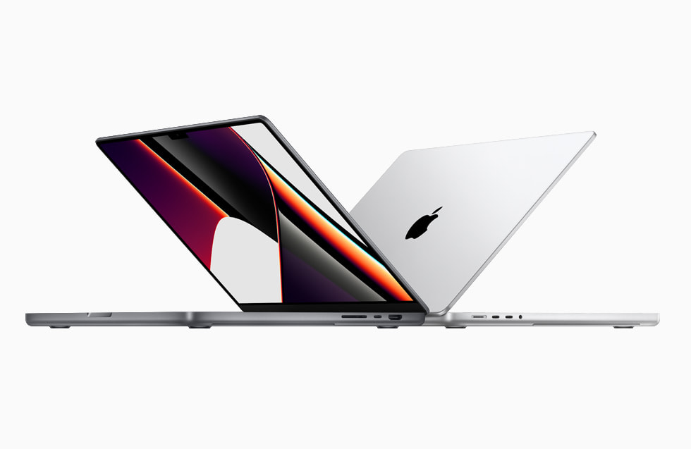
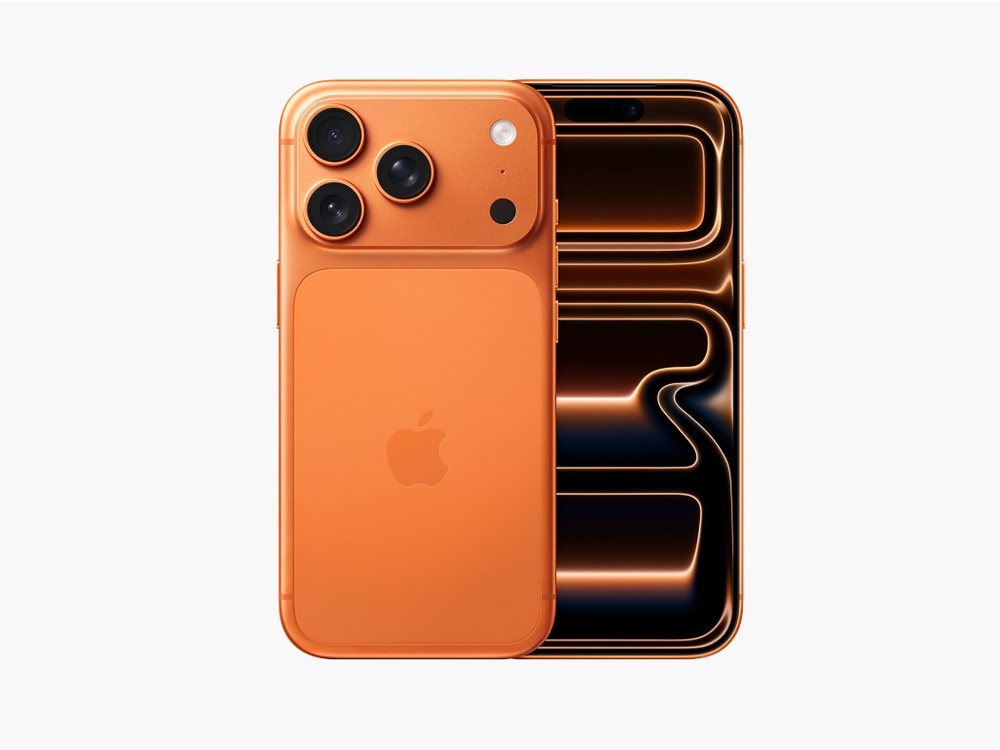
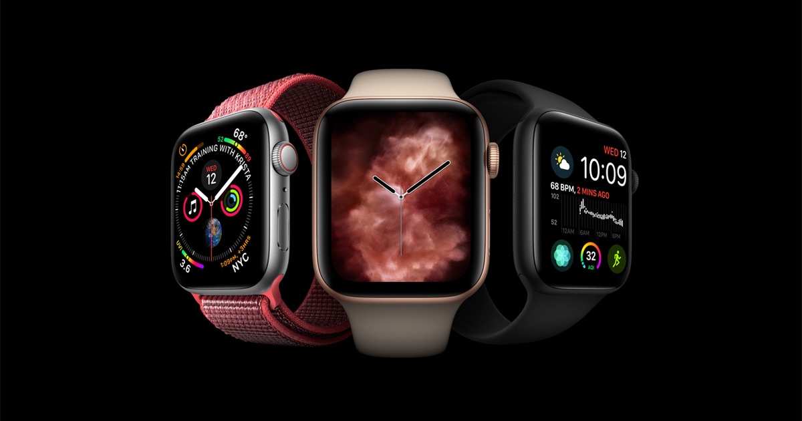

Nair pods are pre-measured capsules of Nair hair-removal cream designed for quick, mess-free use. You simply apply the cream to the skin, wait a few minutes, and wipe it away to remove unwanted hair. They’re convenient for travel and small touch-ups, and are formulated to leave skin smooth while minimizing irritation when used as directed.

MacBook Pro is a line of laptops designed by Apple Inc. It features a high-performance processor, a vibrant Retina display, and a sleek design. The MacBook Pro is known for its powerful capabilities, making it ideal for professionals in creative fields such as video editing, graphic design, and software development.

iPhone is a smartphone designed by Apple Inc. It features a high-performance processor, a vibrant Retina display, and a sleek design. The iPhone is known for its powerful capabilities, making it ideal for professionals in creative fields such as video editing, graphic design, and software development.

Apple Watch is a smartwatch designed by Apple Inc. It features a high-performance processor, a vibrant Retina display, and a sleek design. The Apple Watch is known for its powerful capabilities, making it ideal for professionals in creative fields such as video editing, graphic design, and software development.